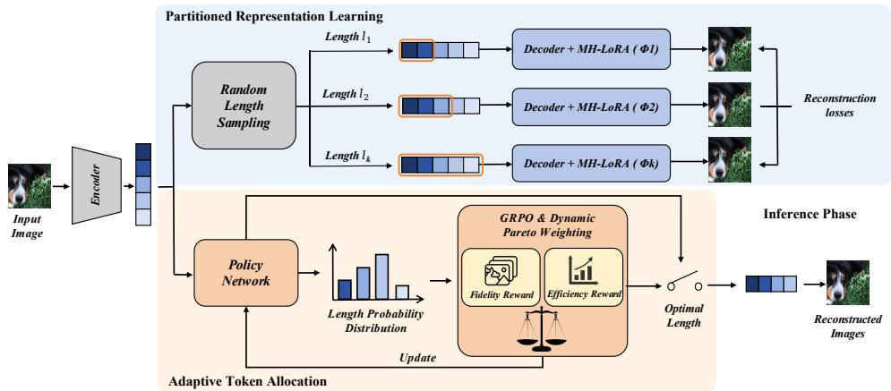

(b) Token–rFID Pareto frontier(b) Token–rFID Pareto frontier. Figure 1: Motivation. (a) Reconstruction quality scales non-uniformly with token length across heterogeneous samples, motivating per-instance adaptive allocation rather than a one-size-fits-all budget. (b) AdaTok lies in a favorable quality–efficiency region compared with fixed-budget baselines.这张图来自论文 PDF 的结构化抽取。当前用于辅助理解 AdaTok 的方法或实验，请结合正文精读段落一起看。

Figureure 2 · : Framework of AdaTokFigure 2: Framework of AdaTok. AdaTok integrates Prioritized Representation Learning (PRL) to learn hierarchical 1D tokens and an Adaptive Token Allocation (ATA) policy to autonomously select a content-adaptive token budget for each image.这张图概括 AdaTok 的整体方法流程。阅读时先看模块之间传递的训练信号，再看作者如何把目标拆成可优化的子问题。